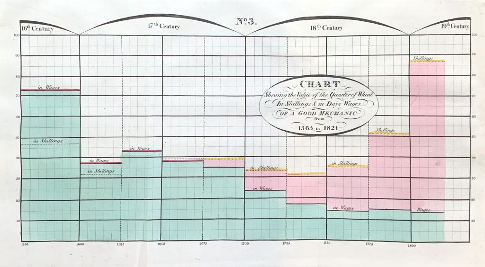

Cornell College
Well, you guessed it….
Today, I want to bring you on a brief version of our trip.
We viewed an assortment of archive items.
Working papers for ‘Hereditary Genius’: statistical tables and calculations for the number of gifted relations across families, etc. 1860s by Galton.
Results of over 8,000 coin toss experiments conducted by Leopold T Griffith. Griffith supplied the data to Karl Pearson, who used them for illustrative purposes in his Gresham Lectures. Enclosed with the exercise book is the 1891 one penny coin used by Griffith.
Founder of Modern Nursing: Florence Nightingale is widely considered the founder of modern nursing. Her emphasis on hygiene, patient care, and nursing education revolutionized healthcare practices and professionalized nursing.
Role in the Crimean War: During the Crimean War (1853–1856), Nightingale drastically improved sanitary conditions at British field hospitals, reducing the death rate from 42% to 2%. Her work earned her the nickname “The Lady with the Lamp” for making nightly rounds to care for wounded soldiers.
Pioneer in Data Visualization: Nightingale was also a statistician who used innovative data visualizations, like her famous “coxcomb” diagrams, to present mortality data and argue for healthcare reform. She was among the first to use statistics to influence public health policy.
Podcast Bricks and Mortals.
Subhadra gave us a live tour around UCL’s campus.
Galton, Pearson, and Fisher were all eugenicists.
“Galton Lecture Theatre had been renamed Lecture Theatre 115, the Pearson Lecture Theatre changed to Lecture Theatre G22 and the Pearson Building to the North-West Wing”1
“Summer of 2020, GEE took the collective decision to rename the RA Fisher Centre for Computational Biology as the UCL Centre for Computational Biology”2
Gertrude Cox was one of the first prominent female statisticians in the United States. In 1949, she became the first woman elected into the International Statistical Institute, a significant achievement that helped pave the way for other women in the field.
Gertrude Cox earned her bachelor’s and master’s degrees from Iowa State College (now Iowa State University) in Ames, Iowa.
She also worked closely with some of the early giants in stats, like Ronald Fisher and George Snedecor, while at Iowa State.
She established the Department of Experimental Statistics at North Carolina State University in 1940, making it the first of its kind in the U.S.
William Playfair is credited with inventing the bar chart (1786), the line graph (1786), the pie chart (1801), and the area chart.
Playfair wasn’t formally trained in statistics—he was a Scottish engineer, economist, and political writer. He used visualizations to make economic and political arguments more persuasive, proving that powerful ideas don’t always come from traditional paths.
In his book The Commercial and Political Atlas (1786), Playfair used graphs to illustrate Britain’s trade with other countries. This was revolutionary then and made complex data far more accessible and intuitive.
We primarily focussed on plots in books by Playfair or written by individuals inspired by Playfair.

Best known for developing the t-test, a statistical method for determining whether there is a significant difference between the means of two groups.
Worked as a statistician at the Guinness Brewery in Dublin, Ireland.
To protect his work’s confidentiality, he published under the pseudonym “Student,” leading to the common name Student’s t-test.
As they say, when in Ireland, go to Guinness?
Unfortunately, our tour guide at Guinness only gave a short spiel on Gosset.
But, for some reason, the students still very much enjoyed the visit…
We plan to implement the course again in the Fall of 2027.
We is Dr. Ann Cannon and I. Ann will be the lead next.
Huge acknowledgment to Beth Johnson and David Holmes.
Our course has now spawned at least two others!
History of Stats in UK & IE, bit.ly/STATS_UKnIR